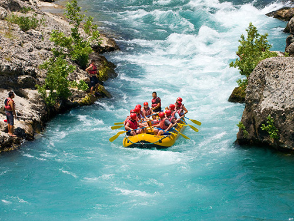
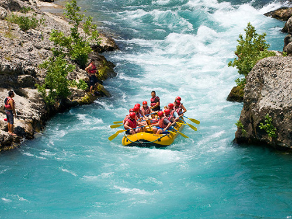

At Winding River Whitewater Rafting, our passion flows as swiftly as the rivers we navigate. We believe that adventure is not just a destination—it's a journey down exhilarating rapids, through pristine canyons, and into the heart of nature. Our mission is to create unforgettable experiences for thrill-seekers, families, and friends alike. We pledge to:
- Champion Safety: Safety is our compass. From expert guides to top-notch equipment, we ensure every trip is secure and enjoyable.
- Celebrate Nature: We honor the untamed beauty of rivers, forests, and wildlife. Our trips immerse you in the great outdoors.
- Forge Connections: Whether you're bonding with loved ones or making new friends, our rafts become vessels of camaraderie.
- Inspire Courage: The rush of whitewater fuels courage. We encourage you to conquer fears, try new things, and embrace adventure.
- Preserve Rivers: We're stewards of the environment. Through responsible practices, we protect the rivers we love.
Join us at Winding River Whitewater Rafting, where every twist and turn leads to memories that ripple through time.
 
